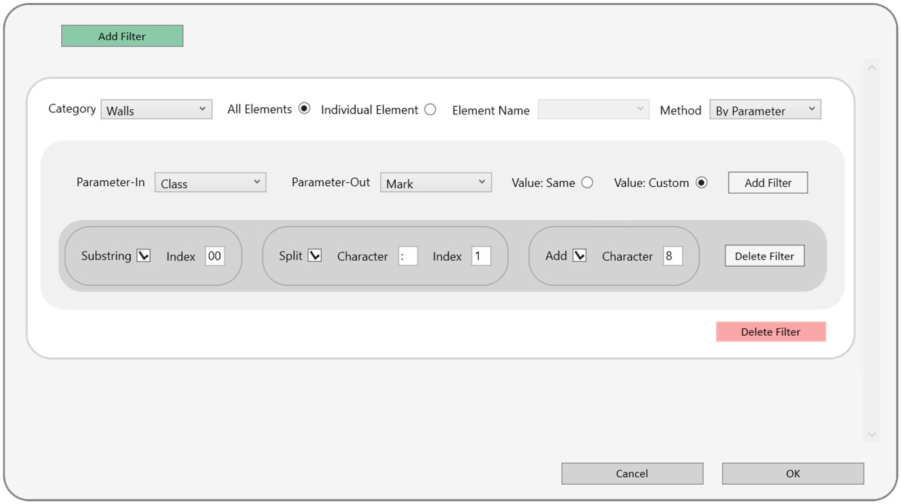

ParamFlow
Parameter values copied and reshaped in bulk
A value often already exists in one parameter and is needed, slightly changed, in another. ParamFlow copies a reference parameter to a target parameter, across a whole category or a single element. In Same mode the value goes straight across. In Custom mode, it passes through small string modules, which run left to right, and any number of modules can be stacked, running top to bottom.
The pipeline
Tool Overview

- Add a filter and pick a category, for all its elements or a single one by name.
- Choose the parameters: Parameter-In is read, Parameter-Out is written.
- Choose the value: Same copies straight across, Custom runs the modules below.
- Set the modules: Substring takes text from an index, Split cuts at a character and keeps index 0 or 1, Add appends a character.
Design decisions
No code neededCommon text edits become a chain of small modules.
Safe when worksharedIt checks element ownership before writing.
Whole category or one elementThe same pipeline can be tested on one element first.